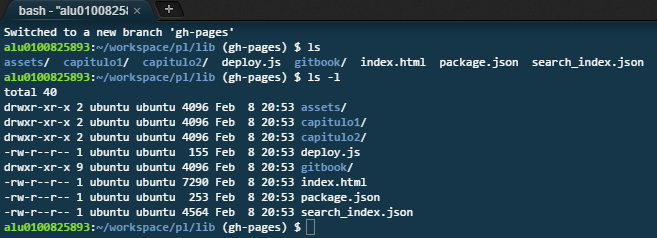
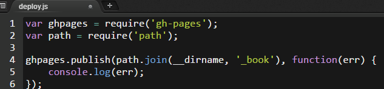

Uso de gh-pages
A la hora de representar un repositorio como un sitio web podemos utilizar gh-pages, el cual nos permite servir una página web asociada a un repositorio de GitHub.
Esto funciona debido a que GitHub busca una rama llamada gh-pages y en el caso de encontrarla localiza el fichero index.html a partir del cual se despliega la página web.
Despliege de gh-pages
Partiendo de un repositorio de GitHub, creamos una nueva rama:
git checkout --orphan gh-pages
En esta rama pondremos el archivo index.html que contendrá la página web. 
Seguidamente, empujaremos la rama gh-pages al repositorio remoto.
git push origin gh-pages
Con esto ya se podrá ver la página web en la direccion de tipo http://usuario.github.io/repositorio .
Despliegue automático de gh-pages
A veces nuestro repositorio está estructurado de manera que no permite poner un archivo index.html en el nivel mas superior o tiene cosas que no son necesarias para desplegar la página web. Para solucionar esto podemos automatizar el despliegue con la ayuda del paquete de npm gh-pages.
Para usarlo primero lo instalamos localmente.
npm install gh-pages --save-dev
Luego podemos usar el paquete con javascript, por ejemplo guardandolo en un archivo deploy.js, teniendo en cuenta que _book es donde esta nuestro index.html. 
Por último,para el ejemplo bastaría con ejecutar el siguiente comando cuando queramos desplegar gh-pages.
node deploy.js